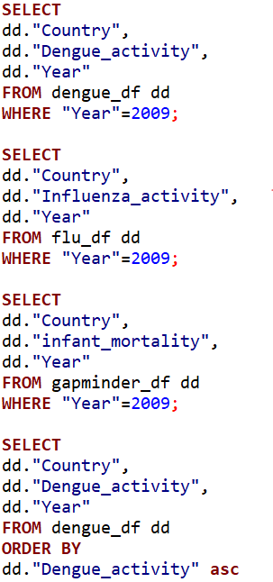
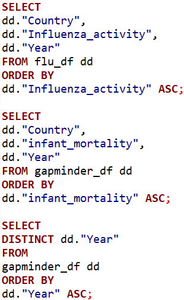
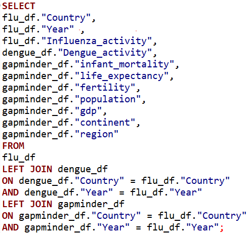

8 Vaardigheid 6: Werken met relational databases
Tijdens een data analyse wordt vaak de informatie uit verschillende databases gecombineerd. Een gemeenschappelijk gebruikte taal voor het ophalen, beheren en opslaan van data uit gerelateerde databases is SQL. In dergelijke databases is data georganiseerd in tabellen die aan elkaar gekoppeld kunnen worden gebaseerd op gemeenschappelijke eigenschappen.
Met het onderstaande voorbeeld laat ik zien, dat ik met SQL de informatie uit drie verschillende tabellen in DBeaver kan samenvoegen.
8.1 Samenvoegen van virus-activiteit dummy data met gapminder dataset
Ik maak eerst drie tabellen aan in RStudio: één met de gapminder dataset van het {dslabs} package en twee tabellen met datasets waarin voor verschillende landen de Influenza of Knokkelkoorts activiteit meerdere keren per jaar gemeten is.
#Tabel 1:
gapminder_df <- as.data.frame(gapminder)
head(gapminder_df, 3)## country year infant_mortality life_expectancy fertility population
## 1 Albania 1960 115.4 62.87 6.19 1636054
## 2 Algeria 1960 148.2 47.50 7.65 11124892
## 3 Angola 1960 208.0 35.98 7.32 5270844
## gdp continent region
## 1 NA Europe Southern Europe
## 2 13828152297 Africa Northern Africa
## 3 NA Africa Middle Africa#Tabel 2:
flu_df <- as.data.frame(read.csv(here::here("data_raw", "data03_assignment_7",
"flu_data.csv"), skip = 11))
head(flu_df, 3)## Date Argentina Australia Austria Belgium Bolivia Brazil Bulgaria Canada
## 1 2002-12-29 NA NA NA NA NA 174 NA NA
## 2 2003-01-05 NA NA NA NA NA 162 NA NA
## 3 2003-01-12 NA NA NA NA NA 174 NA NA
## Chile France Germany Hungary Japan Mexico Netherlands New.Zealand Norway
## 1 NA NA NA NA NA NA NA NA NA
## 2 NA NA NA NA NA NA NA NA NA
## 3 1 NA NA NA NA NA NA NA NA
## Paraguay Peru Poland Romania Russia South.Africa Spain Sweden Switzerland
## 1 NA 329 NA NA NA NA NA NA NA
## 2 NA 315 NA NA NA NA NA NA NA
## 3 NA 314 NA NA NA NA NA NA NA
## Ukraine United.States Uruguay
## 1 NA NA NA
## 2 NA NA NA
## 3 NA NA NA#Tabel 3:
dengue_df <- as.data.frame(read.csv(here::here("data_raw", "data03_assignment_7",
"dengue_data.csv"), skip = 11))
head(dengue_df, 3)## Date Argentina Bolivia Brazil India Indonesia Mexico Philippines
## 1 2002-12-29 NA 0.101 0.073 0.062 0.101 NA NA
## 2 2003-01-05 NA 0.143 0.098 0.047 0.039 NA NA
## 3 2003-01-12 NA 0.176 0.119 0.051 0.059 0.071 NA
## Singapore Thailand Venezuela
## 1 0.059 NA NA
## 2 0.059 NA NA
## 3 0.238 NA NADe Influenza en Knokkelkoorts data is niet tidy. Ik maak de tabellen zelf tidy met:
flu_df <- pivot_longer(data = flu_df, cols=c(2:30), names_to = "country", values_to = "influenza_activity")
dengue_df <- pivot_longer(data = dengue_df, cols=c(2:11), names_to = "country", values_to = "dengue_activity")Voordat ik de tabellen ga samenvoegen in DBeaver, zorg ik er eerst voor dat de variabelen waarop ik de tabellen wil samenvoegen, land en datum, hetzelfde zijn. In de gapminder tabel is de datum aanwezig als jaartallen in een kolom ‘year’, In de andere tabellen is de datum aanwezig als jaar-maand-dag in een kolom ‘Date.’ Tevens is het belangrijk dat de land en datum kolommen dezelfde titel hebben en van hetzelfde datatype zijn.
# Zorg dat er in de Influenza en Knokkelkoorts tabel een kolom aanwezig is met de jaartallen, net als in de gapminder tabel:
flu_df <- separate(data = flu_df, col = Date, into = c("year", "month", "day"), sep = "-")
dengue_df <- separate(data = dengue_df, col = Date, into = c("year", "month", "day"), sep = "-")
# Maak nieuwe tabellen, met de Influenza of Knokkelkoorts activiteit per jaar i.p.v. per dag:
flu_df <- flu_df %>% group_by(country, year) %>% summarise_each(funs(sum), influenza_activity)
dengue_df <- dengue_df %>% group_by(country, year) %>% summarise_each(funs(sum), dengue_activity)
## Afgekeken van https://stackoverflow.com/questions/25089665/error-only-defined-on-a-data-frame-with-all-numeric-variables-with-ddply-on-lar
# Maak in deze tabellen de kolommen waarop wordt samengevoegd van hetzelfde datatype als in de gapminder tabel:
flu_df$country <- as.factor(flu_df$country)
dengue_df$country <- as.factor(dengue_df$country)
flu_df$year <- as.integer(flu_df$year)
dengue_df$year <- as.integer(dengue_df$year)
# Maak opnieuw dataframes van de tabellen:
flu_df <- as.data.frame(flu_df)
dengue_df <- as.data.frame(dengue_df)
# Sla drie dataframes op als CSV en RDS files:
#write.csv(gapminder_df, file = "gapminder_df.csv")
#write.csv(flu_df, file = "flu_df.csv")
#write.csv(dengue_df, file = "dengue_df.csv")
#saveRDS(gapminder_df, "C:/Users/steph/DSFB2/portfolio_book/gapminder_df.rds")
#saveRDS(flu_df, "C:/Users/steph/DSFB2/portfolio_book/flu_df.rds")
#saveRDS(dengue_df, "C:/Users/steph/DSFB2/portfolio_book/dengue_df.rds")De kolommen met land en datum zijn nu hetzelfde en de tabellen kunnen geüpload worden naar DBeaver:
library(DBI)
# Maak verbinding met mijn database in DBeaver:
con <- dbConnect(RPostgres::Postgres(),
dbname = "workflowsdb",
host="localhost",
port="5432",
user="postgres",
password="...")
# Stuur de tabellen naar de database:
dbWriteTable(con, "flu_df", flu_df)
dbWriteTable(con, "dengue_df", dengue_df)
dbWriteTable(con, "gapminder_df", gapminder_df)
# Sluit de verbinding weer:
dbDisconnect(con)Om de data(overdracht) te inspecteren, heb ik in DBeaver de ‘Data’, ‘Properties’ en ‘ER Diagram’ tabs van de tabellen bekeken. Daarnaast heb ik de volgende SQL queries uitgevoerd, waarmee ik specifieke data uit de tabellen opvraag en controleer of dit correct werkt:

Deze queries gaven de verwachtte output. Ze zijn vertaald naar een zelfde inspectie in R:
str(dengue_df)## 'data.frame': 140 obs. of 3 variables:
## $ country : Factor w/ 10 levels "Argentina","Bolivia",..: 1 1 1 1 1 1 1 1 1 1 ...
## $ year : int 2002 2003 2004 2005 2006 2007 2008 2009 2010 2011 ...
## $ dengue_activity: num NA NA 1.53 1.03 1.01 ...str(flu_df)## 'data.frame': 406 obs. of 3 variables:
## $ country : Factor w/ 29 levels "Argentina","Australia",..: 1 1 1 1 1 1 1 1 1 1 ...
## $ year : int 2002 2003 2004 2005 2006 2007 2008 2009 2010 2011 ...
## $ influenza_activity: int NA NA 8843 8627 8966 10267 9299 7952 6946 5541 ...str(gapminder_df)## 'data.frame': 10545 obs. of 9 variables:
## $ country : Factor w/ 185 levels "Albania","Algeria",..: 1 2 3 4 5 6 7 8 9 10 ...
## $ year : int 1960 1960 1960 1960 1960 1960 1960 1960 1960 1960 ...
## $ infant_mortality: num 115.4 148.2 208 NA 59.9 ...
## $ life_expectancy : num 62.9 47.5 36 63 65.4 ...
## $ fertility : num 6.19 7.65 7.32 4.43 3.11 4.55 4.82 3.45 2.7 5.57 ...
## $ population : num 1636054 11124892 5270844 54681 20619075 ...
## $ gdp : num NA 1.38e+10 NA NA 1.08e+11 ...
## $ continent : Factor w/ 5 levels "Africa","Americas",..: 4 1 1 2 2 3 2 5 4 3 ...
## $ region : Factor w/ 22 levels "Australia and New Zealand",..: 19 11 10 2 15 21 2 1 22 21 ...# Per land de Influenza activiteit, Knokkelkoorts activiteit en kindersterfte in 2009:
head(flu_df %>% filter(year == 2009) %>% select(country, influenza_activity, year))## country influenza_activity year
## 1 Argentina 7952 2009
## 2 Australia 22796 2009
## 3 Austria 47117 2009
## 4 Belgium 10320 2009
## 5 Bolivia 14516 2009
## 6 Brazil 10984 2009head(dengue_df %>% filter(year == 2009) %>% select(country, dengue_activity, year))## country dengue_activity year
## 1 Argentina 16.739 2009
## 2 Bolivia 10.362 2009
## 3 Brazil 8.211 2009
## 4 India 4.549 2009
## 5 Indonesia 9.228 2009
## 6 Mexico 14.228 2009head(gapminder_df %>% filter(year == 2009) %>% select(country, infant_mortality, year))## country infant_mortality year
## 1 Albania 15.4 2009
## 2 Algeria 24.3 2009
## 3 Angola 112.2 2009
## 4 Antigua and Barbuda 8.2 2009
## 5 Argentina 13.4 2009
## 6 Armenia 17.0 2009# De laagst gemeten Influenza activiteit, Knokkelkoorts activiteiten kindersterfte:
head(dengue_df %>% select(country, dengue_activity, year) %>% arrange(dengue_activity))## country dengue_activity year
## 1 Singapore 0.059 2002
## 2 India 0.062 2002
## 3 Brazil 0.073 2002
## 4 Bolivia 0.101 2002
## 5 Indonesia 0.101 2002
## 6 Bolivia 0.427 2015head(flu_df %>% select(country, influenza_activity, year) %>% arrange(influenza_activity))## country influenza_activity year
## 1 Sweden 106 2010
## 2 Sweden 153 2006
## 3 Sweden 169 2008
## 4 Brazil 174 2002
## 5 Sweden 179 2007
## 6 Sweden 201 2011head(gapminder_df %>% select(country, infant_mortality, year) %>% arrange(infant_mortality))## country infant_mortality year
## 1 Luxembourg 1.5 2015
## 2 Luxembourg 1.6 2012
## 3 Iceland 1.6 2013
## 4 Luxembourg 1.6 2013
## 5 Iceland 1.6 2014
## 6 Luxembourg 1.6 2014# De jaartallen in de gapminder dataset:
gapminder_df %>% select(year) %>% arrange() %>% unique() %>% as.character()## [1] "1960:2016"De inspectie in R gaf dezelfde, correcte resultaten als de queries. De tabellen kunnen nu samengevoegd worden gebaseerd op de compound key ‘country’ en ‘year’ van de tabellen. Ik doe dit eerst in R…:
#readRDS(here::here("gapminder_df.rds"))
#readRDS(here::here("flu_df.rds"))
#readRDS(here::here("dengue_df.rds"))
# Voeg flu_df en dengue_df samen...:
flu_dengue <- left_join(flu_df, dengue_df, by = c("country", "year"))
#...en voeg gapminder_df toe:
flu_dengue_gapminder_R <- left_join(flu_dengue, gapminder_df, by = c("country", "year"))
head(flu_dengue_gapminder_R, 5)## country year influenza_activity dengue_activity infant_mortality
## 1 Argentina 2002 NA NA 17.1
## 2 Argentina 2003 NA NA 16.6
## 3 Argentina 2004 8843 1.533 16.0
## 4 Argentina 2005 8627 1.035 15.3
## 5 Argentina 2006 8966 1.007 14.6
## life_expectancy fertility population gdp continent region
## 1 74.3 2.38 37889443 242076212334 Americas South America
## 2 74.5 2.34 38309475 263468585945 Americas South America
## 3 75.0 2.31 38728778 287258675094 Americas South America
## 4 75.3 2.29 39145491 313626005874 Americas South America
## 5 75.3 2.27 39558750 340177780212 Americas South America…en vervolgens in DBeaver:

De output tabel van bovenstaande querie is opgeslagen als een CSV bestand (flu_dengue_gapminder.csv) en kan gebruikt worden in R:
flu_dengue_gapminder <- read_csv(here::here("data", "data01_assignment_7", "flu_dengue_gapminder.csv"))
# Voorbeeld met eerste 10 rijen:
## Om één of andere reden verhelpt 'latex_options = "scale_down"', afgekeken van https://stackoverflow.com/questions/49044753/scale-kable-table-to-fit-page-width, NIET het buiten de marges vallen van de tabel...
kbl(head(flu_dengue_gapminder, 10), caption = "__De gapminder dataset samengevoegd met de Influenza en \nKnokkelkoorts activiteit data__") %>% kable_styling(full_width = F, bootstrap_options = "striped", position = "left", latex_options = "scale_down") %>% column_spec(1:5, bold = TRUE)| Country | Year | Influenza_activity | Dengue_activity | infant_mortality | life_expectancy | fertility | population | gdp | continent | region |
|---|---|---|---|---|---|---|---|---|---|---|
| Argentina | 2002 | NA | NA | 17.1 | 74.3 | 2.38 | 37889443 | 242076212334 | Americas | South America |
| Argentina | 2003 | NA | NA | 16.6 | 74.5 | 2.34 | 38309475 | 263468585945 | Americas | South America |
| Argentina | 2004 | 8843 | 1.533 | 16.0 | 75.0 | 2.31 | 38728778 | 287258675094 | Americas | South America |
| Argentina | 2005 | 8627 | 1.035 | 15.3 | 75.3 | 2.29 | 39145491 | 313626005874 | Americas | South America |
| Argentina | 2006 | 8966 | 1.007 | 14.6 | 75.3 | 2.27 | 39558750 | 340177780212 | Americas | South America |
| Argentina | 2007 | 10267 | 5.569 | 14.1 | 75.2 | 2.25 | 39969903 | 369614509411 | Americas | South America |
| Argentina | 2008 | 9299 | 1.462 | 13.7 | 75.4 | 2.24 | 40381860 | 394594682115 | Americas | South America |
| Argentina | 2009 | 7952 | 16.739 | 13.4 | 75.6 | 2.23 | 40798641 | 397949689763 | Americas | South America |
| Argentina | 2010 | 6946 | 6.621 | 13.0 | 75.8 | 2.22 | 41222875 | 434405530244 | Americas | South America |
| Argentina | 2011 | 5541 | 3.186 | 12.7 | 76.0 | 2.20 | 41655616 | 472935255184 | Americas | South America |
summary(flu_dengue_gapminder)## Country Year Influenza_activity Dengue_activity
## Length:406 Min. :2002 Min. : 106 Min. : 0.073
## Class :character 1st Qu.:2005 1st Qu.: 3302 1st Qu.: 1.508
## Mode :character Median :2008 Median : 9214 Median : 4.303
## Mean :2008 Mean : 23372 Mean : 5.001
## 3rd Qu.:2012 3rd Qu.: 32278 3rd Qu.: 7.872
## Max. :2015 Max. :155577 Max. :16.739
## NA's :72 NA's :354
## infant_mortality life_expectancy fertility population
## Min. : 2.000 Min. :64.70 Min. :1.150 Min. : 3324096
## 1st Qu.: 3.700 1st Qu.:74.17 1st Qu.:1.420 1st Qu.: 9072979
## Median : 5.850 Median :78.25 Median :1.755 Median : 20977828
## Mean : 9.641 Mean :77.20 Mean :1.838 Mean : 42737637
## 3rd Qu.:13.325 3rd Qu.:80.80 3rd Qu.:1.990 3rd Qu.: 46527412
## Max. :53.700 Max. :83.20 Max. :3.980 Max. :207847528
## NA's :42 NA's :42 NA's :42 NA's :42
## gdp continent region
## Min. :7.214e+09 Length:406 Length:406
## 1st Qu.:5.680e+10 Class :character Class :character
## Median :2.616e+11 Mode :character Mode :character
## Mean :5.748e+11
## 3rd Qu.:6.370e+11
## Max. :5.218e+12
## NA's :146Tijd om de daadwerkelijke data te gaan analyseren. Ik wil eerst een overzicht van per jaar, per land de gemiddelde Influenza activiteit, Knokkelkoorts activiteit, kindersterfte, levensverwachting, geboorten en populatie over de periode van 2002 tot 2015.
Ik verwacht dat er meer kindersterfte heeft plaatsgevonden in landen waarin in een bepaald jaar de Influenza of Knokkelkoorts activiteit hoog was.
# Bereken de gemiddelden van de variabelen per jaar en land:
FLU <- flu_dengue_gapminder %>% group_by(Country, Year) %>% summarise(Gem_Influenza_act = mean(Influenza_activity))
DENG <- flu_dengue_gapminder %>% group_by(Country, Year) %>% summarise(Gem_Knokkelkoorts_act = mean(Dengue_activity))
MORT <- flu_dengue_gapminder %>% group_by(Country, Year) %>% summarise(Gem_kindersterfte = mean(infant_mortality))
LIFE <- flu_dengue_gapminder %>% group_by(Country, Year) %>% summarise(Gem_levensverwachting= mean(life_expectancy))
FERT <- flu_dengue_gapminder %>% group_by(Country, Year) %>% summarise(Gem_geboorten = mean(fertility))
POPU <- flu_dengue_gapminder %>% group_by(Country, Year) %>% summarise(Gem_populatie = mean(population))
# Voeg de gemiddelden samen tot een tabel:
desc_stat <- flu_dengue_gapminder %>% select(Country, Year) %>% unique %>% mutate(FLU, DENG, MORT, LIFE, FERT, POPU) %>% arrange(Year)
# Voorbeeld van laatste 10 rijen:
## Om één of andere reden verhelpt 'latex_options = "scale_down"' niet het buiten de marges vallen van de tabel...
kbl(tail(desc_stat, 10), caption = "__Per jaar, per land de gemiddelden van de gemeten variabelen__") %>% kable_styling(full_width = F, bootstrap_options = "striped", position = "left", latex_options = "scale_down") %>% column_spec(1:2, bold = TRUE)| Country | Year | Gem_Influenza_act | Gem_Knokkelkoorts_act | Gem_kindersterfte | Gem_levensverwachting | Gem_geboorten | Gem_populatie |
|---|---|---|---|---|---|---|---|
| Poland | 2015 | 1956 | NA | 4.5 | 77.6 | 1.44 | 38611794 |
| Romania | 2015 | 23679 | NA | 9.7 | 75.2 | 1.45 | 19511324 |
| Russia | 2015 | 21447 | NA | 8.2 | 71.0 | 1.61 | 143456918 |
| South.Africa | 2015 | 98940 | NA | NA | NA | NA | NA |
| Spain | 2015 | 4863 | NA | 3.5 | 82.6 | 1.53 | 46121699 |
| Sweden | 2015 | 328 | NA | 2.4 | 82.1 | 1.93 | 9779426 |
| Switzerland | 2015 | 6390 | NA | 3.4 | 83.0 | 1.55 | 8298663 |
| Ukraine | 2015 | 12101 | NA | 7.7 | 71.5 | 1.49 | 44823765 |
| United.States | 2015 | 61295 | NA | NA | NA | NA | NA |
| Uruguay | 2015 | 4195 | NA | 8.7 | 76.8 | 2.03 | 3431555 |
Ik ben A) geïnteresseerd in de trends van Influenza en Knokkelkoorts activiteit door de jaren heen en wil B) het verband tussen deze activiteit en kindersterfte toetsen.
Figure 8.1: Influenza activiteit door de jaren heen. Voor 29 landen het aantal Influenza gevallen van 2002 tot en met 2015.
Figure 8.2: Knokkelkoorts activiteit door de jaren heen. Voor 4 landen het aantal Knokkelkoorts gevallen van 2002 tot en met 2015.
Figuur 8.1 laat voor vrijwel alle landen twee grote pieken in Influenza activiteit zien in 2009 en 2014. Figuur 8.2 laat één grote piek in Knokkelkoorts activiteit zien in 2009 voor de vier bijgehouden landen.
# Verband tussen Influenza activiteit en kindersterfte
# Filter missende waarden weg:
fdg3 <- flu_dengue_gapminder %>% filter(Influenza_activity > 0 & infant_mortality > 0)
# Voer correlatie test uit:
cor.test(fdg3$Influenza_activity, fdg3$infant_mortality, method=c("pearson")) #p-value = 0.6713, geen stat. sig. verband##
## Pearson's product-moment correlation
##
## data: fdg3$Influenza_activity and fdg3$infant_mortality
## t = 0.42482, df = 301, p-value = 0.6713
## alternative hypothesis: true correlation is not equal to 0
## 95 percent confidence interval:
## -0.08844289 0.13677987
## sample estimates:
## cor
## 0.0244791Figure 8.3: Per land het verband tussen Influenza activiteit en kindersterfte door de jaren heen. Voor 29 landen is van 2002 tot en met 2015 per jaar het aantal Influenza gevallen en de sterfte onder kinderen gemeten.
# Verband tussen Knokkelkoorts activiteit en kindersterfte
# Filter missende waarden weg:
fdg4 <- flu_dengue_gapminder %>% filter(Dengue_activity > 0 & infant_mortality > 0)
# Voer correlatie test uit:
cor.test(fdg4$Dengue_activity, fdg4$infant_mortality, method=c("pearson")) #p-value = 0.0008, wel stat. sig. verband##
## Pearson's product-moment correlation
##
## data: fdg4$Dengue_activity and fdg4$infant_mortality
## t = -3.5682, df = 50, p-value = 0.000804
## alternative hypothesis: true correlation is not equal to 0
## 95 percent confidence interval:
## -0.6442119 -0.2025123
## sample estimates:
## cor
## -0.4505146Figure 8.4: Per land het verband tussen Knokkelkoorts acitviteit en kindersterfte door de jaren heen. Voor 29 landen is van 2002 tot en met 2015 per jaar het aantal Knokkelkoorts gevallen en de sterfte onder kinderen gemeten.
Conclusie
Figuren 8.1 en 8.2 laten een min of meer overeenkomend patroon zien, misschien wordt de activiteit van de virussen door één of meerdere dezelfde parameters beïnvloed.
Gebaseerd op de correlatie coëfficienten van 0.02 en -0.45 voor respectievelijk een verband tussen kindersterfte en Inlfuenza activiteit en kindersterfte en Knokkelkoorts activiteit, lijkt er geen positief (of negatief) verband te zijn tussen uitbraken van deze virussen en kindersterfte.